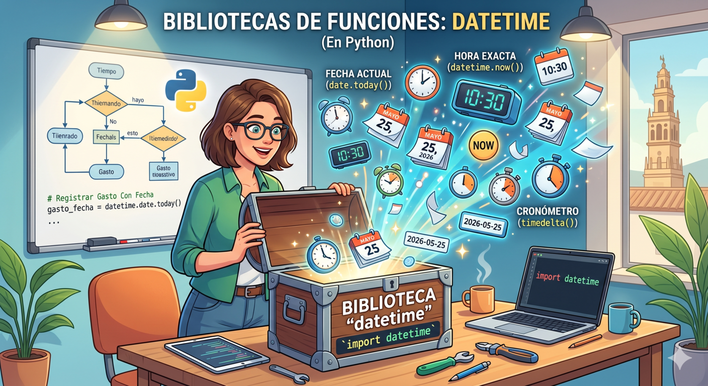
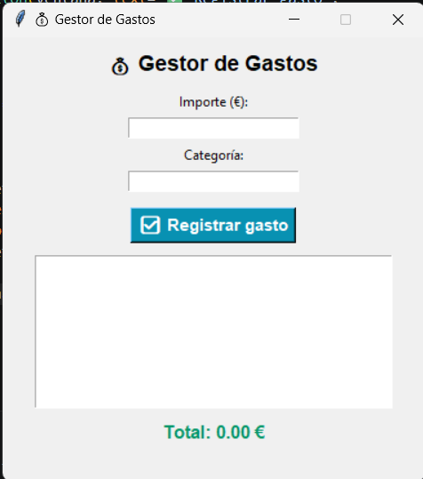

1. Librerías o bibliotecas

Imagina que estás construyendo una casa. Puedes fabricar tus propios martillos y sierras (eso sería crear tus propias funciones con def), pero lo más lógico e inteligente es ir a la ferretería y comprar una caja de herramientas que alguien ya ha fabricado por ti.
En Python, a estas cajas de herramientas las llamamos Bibliotecas o Librerías. Son archivos repletos de funciones creadas por programadores expertos que puedes traer a tu programa para usarlas al instante.
Python viene "de fábrica" con una librería estándar gigantesca que te permite hacer cosas increíbles: desde operaciones matemáticas complejas hasta generar números aleatorios o conectarte a internet.
¿Cómo traigo la caja de herramientas a mi programa?
Para usar una librería, tienes que pedirle a Python que la importe (la traiga a tu archivo) utilizando la palabra clave import. Esta orden se pone siempre al principio del todo de tu código, en la primera línea.
Vamos a ver un ejemplo perfecto para tu Gestor de Gastos. Seguramente querrás que al introducir un ticket, el programa guarde automáticamente la fecha exacta de ese día. Para no tener que programar un calendario desde cero, usamos la librería datetime (fecha y hora):
# 1. Traemos la caja de herramientas de fechas al principio del programa
import datetime
print("--- REGISTRO DE GASTOS ---")
importe = float(input("Introduce el importe: "))
# 2. Usamos una herramienta de esa caja (usando el punto para abrirla)
fecha_hoy = datetime.date.today()
print("Gasto de", importe, "€ guardado correctamente con fecha:", fecha_hoy)Fíjate en el paso 2: para usar una función que está dentro de una librería, primero escribimos el nombre de la librería, luego un punto (que significa "entra ahí y busca"), y luego el nombre de la función concreta.
Podemos también importar solo algunas funciones de una librería y no la librería completa:
import datetime #Importa toda la biblioteca
import math #Importa toda la biblioteca
from datetime import date #Importa solo lo que necesitas
from math import sqrt, ceil # Importa funciones concretas
import datetime as dt #Importa con un alias más cortoLibrería estándar vs librería de terceros
No todas las librerías funcionan igual. Antes de usarlas para tu Gestor, conviene que conozcas esta diferencia:
- Las bibliotecas de la librería estándar de Python (datetime, csv, json, os y tkinter) vienen incluidas con Python desde el momento de la instalación. Solo necesitas importarlas directamente en tu código, sin ningún paso previo.
- Las librerías de terceros como matplotlib han sido desarrolladas por programadores externos y no vienen incluidas con Python. Antes de importarlas debes instalarlas una sola vez usando pip, el gestor de paquetes de Python. En el terminal integrado de VS Code escribe:
pip install matplotlib
Una vez instalada, ya puedes importarla con normalidad en cualquier programa.
2. Herramientas para tu Gestor
A continuación vamos a ver algunas librerías que te pueden resultar muy útiles para tu Gestor de gastos.
No te preocupes sino entiendes el código, pruébalo y observa el funcionamiento de cada librería.
Datetime
Permite trabajar con fechas y horas. En tu Gestor la usarás para registrar automáticamente cuándo se realizó cada gasto, sin necesidad de pedírselo al usuario.
- Cómo importarla:
from datetime import date, datetime- Algunas funciones útiles:
| Función/atributo | Descripción | Ejemplo |
| datetime.date.today() | fecha actual | 2026-05-21 |
| datetime.datetime.now() | Fecha y hora actual | 2026-05-21 19:15:05 |
| .strftime("%d/%m/%Y") | Formatea una fecha como texto | "21/05/2026" |
| .strptime("15/11/2024", "%d/%m/%Y") | Convierte texto a fecha | date(2026, 05, 21) |
| datetime.timedelta(days=30) | Diferencia entre fechas | Sumar o restar días |
| .day / .month / .year | Extrae día, mes o año | 21 / 05 / 2026 |
- Ejemplo en el Gestor:
import datetime
# Fecha y hora actuales
hoy = datetime.date.today()
ahora = datetime.datetime.now()
print("=== INFORMACIÓN DE FECHA Y HORA ===")
print(f"Fecha de hoy: {hoy.strftime('%d/%m/%Y')}")
print(f"Hora actual: {ahora.strftime('%H:%M:%S')}")
print(f"Día de la semana: {hoy.strftime('%A')}")
print(f"Mes actual: {hoy.strftime('%B')}")
# Días transcurridos desde el inicio del mes
inicio_mes = datetime.date(hoy.year, hoy.month, 1)
dias_transcurridos = (hoy - inicio_mes).days + 1
dias_restantes = 30 - dias_transcurridos
print(f"\n=== CONTROL DEL MES ===")
print(f"Llevas {dias_transcurridos} días de mes")
print(f"Quedan aproximadamente {dias_restantes} días para cerrar el mes")
# Cómo quedaría el registro de un gasto con fecha automática
print(f"\n=== REGISTRO DE GASTO DE EJEMPLO ===")
gasto = {
"importe": 45.50,
"categoria": "comida",
"fecha": hoy.strftime("%d/%m/%Y"),
"hora": ahora.strftime("%H:%M")
}
print(f"Gasto registrado:")
for clave, valor in gasto.items():
print(f" {clave}: {valor}")- Salida esperada:
=== INFORMACIÓN DE FECHA Y HORA ===
Fecha de hoy: 15/11/2024
Hora actual: 10:32:05
Día de la semana: Friday
Mes actual: November
=== CONTROL DEL MES ===
Llevas 15 días de mes
Quedan aproximadamente 15 días para cerrar el mes
=== REGISTRO DE GASTO DE EJEMPLO ===
Gasto registrado:
importe: 45.5
categoria: comida
fecha: 15/11/2024
hora: 10:32- strftime("%d/%m/%Y") da formato a la fecha: día/mes/año. Puedes cambiar el formato a tu gusto: "%Y-%m-%d" para año-mes-día.
- Fíjate que no se importa el módulo datetime completo, sino solo la clase date.
- Documentación oficial: Librería datetime
Matplotlib
Es la biblioteca de visualización más popular de Python. Genera gráficas de barras, sectores, líneas y muchas más. En tu Gestor la usarás para representar visualmente los gastos por categoría.
- Cómo instalarla e importarla:
# Primero instala en el terminal:
# pip install matplotlib
import matplotlib.pyplot as plt- Algunas funciones útiles:
| Función | Descripción | Ejemplo |
| plt.bar(x, y) | Gráfica de barras | Gastos por categoría |
| plt.pie(valores, labels=etiquetas) | Gráfica de sectores | Porcentaje por categoría |
| plt.plot(x, y) | Gráfica de líneas | Evolución de gastos |
| plt.title("texto") | Título de la gráfica | "Gastos de noviembre" |
| plt.xlabel("texto") | Etiqueta eje X | "Categoría" |
| plt.ylabel("texto") | Etiqueta eje Y | "Total (€)" |
| plt.figure(figsize=(8,5)) | Tamaño de la gráfica | Ancho x alto en pulgadas |
| plt.tight_layout() | Ajusta márgenes | Evita recortes |
| plt.show() | Muestra la gráfica | Abre la ventana |
| plt.savefig("grafica.png") | Guarda la gráfica | Exporta a imagen |
- Ejemplo en el Gestor:
import matplotlib.pyplot as plt
# Datos de ejemplo del Gestor de Gastos
totales = {
"comida": 245.50,
"transporte": 89.00,
"ocio": 120.75,
"casa": 450.00,
"salud": 60.00
}
colores = ["#0891B2", "#7C3AED", "#D97706", "#059669", "#DC2626"]
categorias = list(totales.keys())
importes = list(totales.values())
total_mes = sum(importes)
# Crear figura con dos gráficas lado a lado
fig, (ax1, ax2) = plt.subplots(1, 2, figsize=(13, 5))
fig.suptitle(" Resumen de gastos — Noviembre 2024",
fontsize=14, fontweight="bold")
# Gráfica de barras
ax1.bar(categorias, importes, color=colores, width=0.6)
ax1.set_title("Gasto total por categoría")
ax1.set_xlabel("Categoría")
ax1.set_ylabel("Total (€)")
ax1.set_ylim(0, max(importes) * 1.15)
# Añadir valor encima de cada barra
for i, (cat, imp) in enumerate(zip(categorias, importes)):
ax1.text(i, imp + 5, f"{imp:.0f} €",
ha="center", fontsize=9, fontweight="bold")
# Gráfica de sectores
wedges, texts, autotexts = ax2.pie(
importes,
labels=categorias,
autopct="%1.1f%%",
colors=colores,
startangle=90,
pctdistance=0.75
)
ax2.set_title("Distribución por categoría")
# Añadir total en el centro
ax2.text(0, 0, f"Total\n{total_mes:.0f} €",
ha="center", va="center",
fontsize=11, fontweight="bold")
plt.tight_layout()
plt.savefig("resumen_gastos.png") # Guarda la imagen
plt.show()
print(f" Gráfica guardada como resumen_gastos.png")
print(f"\n Resumen numérico:")
for cat, imp in totales.items():
porcentaje = (imp / total_mes) * 100
print(f" {cat:<15} {imp:>8.2f} € ({porcentaje:.1f}%)")
print(f" {'TOTAL':<15} {total_mes:>8.2f} € (100%)")- Salida esperada:
Gráfica guardada como resumen_gastos.png
Resumen numérico:
comida 245.50 € (25.8%)
transporte 89.00 € (9.3%)
ocio 120.75 € (12.7%)
casa 450.00 € (47.2%)
salud 60.00 € (6.3%)
TOTAL 965.25 € (100%)- Documentación oficial: Librería Matplotlib
CSV
Permite leer y escribir archivos CSV (valores separados por comas). Es el formato más universal para intercambiar datos: cualquier hoja de cálculo como Excel o Google Sheets puede abrirlo directamente. Con ella tu Gestor podrá exportar e importar el historial de gastos.
- Como importarla:
import csv- Algunas funciones útiles:
| Función | Descripción | Uso en el gestor |
| csv.DictWriter(f, fieldnames) | Escribe filas como diccionarios | Exportar gastos |
| writer.writeheader() | Escribe la cabecera con los nombres de columnas | Primera fila del CSV |
| writer.writerow(dict) | Escribe una fila | Un gasto |
| writer.writerows(lista) | Escribe varias filas de golpe | Todos los gastos |
| csv.DictReader(f) | Lee filas como diccionarios | Importar gastos |
| csv.writer(f) | Escribe filas como listas | Formato simple |
| csv.reader(f) | Lee filas como listas | Lectura simple |
- Ejemplo en el gestor:
import csv
import os
# Datos de ejemplo del Gestor de Gastos
gastos = [
{"fecha": "01/11/2024", "categoria": "comida", "importe": 45.50},
{"fecha": "03/11/2024", "categoria": "transporte", "importe": 32.00},
{"fecha": "05/11/2024", "categoria": "ocio", "importe": 18.75},
{"fecha": "08/11/2024", "categoria": "casa", "importe": 120.00},
{"fecha": "10/11/2024", "categoria": "salud", "importe": 9.99},
{"fecha": "12/11/2024", "categoria": "comida", "importe": 67.30},
{"fecha": "14/11/2024", "categoria": "ocio", "importe": 45.00},
]
# ── PASO 1: Exportar gastos a CSV ──────────────────────────────
archivo = "gastos_noviembre.csv"
campos = ["fecha", "categoria", "importe"]
with open(archivo, "w", newline="", encoding="utf-8") as f:
writer = csv.DictWriter(f, fieldnames=campos)
writer.writeheader()
writer.writerows(gastos)
print(f"Archivo '{archivo}' creado con {len(gastos)} gastos")
print(f" Tamaño: {os.path.getsize(archivo)} bytes")
print(f" Puedes abrirlo con Excel o Google Sheets\n")
# ── PASO 2: Importar y mostrar los gastos ─────────────────────
print(" Contenido del archivo:")
print(f"{'FECHA':<14} {'CATEGORÍA':<14} {'IMPORTE':>10}")
print("─" * 42)
total = 0.0
gastos_importados = []
with open(archivo, "r", encoding="utf-8") as f:
reader = csv.DictReader(f)
for fila in reader:
fila["importe"] = float(fila["importe"])
gastos_importados.append(fila)
total += fila["importe"]
print(f"{fila['fecha']:<14} {fila['categoria']:<14} "
f"{fila['importe']:>9.2f} €")
print("─" * 42)
print(f"{'TOTAL':<28} {total:>9.2f} €")
# ── PASO 3: Resumen por categoría ─────────────────────────────
print("\n Resumen por categoría:")
resumen = {}
for g in gastos_importados:
cat = g["categoria"]
resumen[cat] = resumen.get(cat, 0) + g["importe"]
for cat, subtotal in sorted(resumen.items(),
key=lambda x: x[1], reverse=True):
porcentaje = (subtotal / total) * 100
print(f" {cat:<14} {subtotal:>8.2f} € ({porcentaje:.1f}%)")- Salida esperada:
Archivo 'gastos_noviembre.csv' creado con 7 gastos
Tamaño: 248 bytes
Puedes abrirlo con Excel o Google Sheets
Contenido del archivo:
FECHA CATEGORÍA IMPORTE
──────────────────────────────────────────
01/11/2024 comida 45.50 €
03/11/2024 transporte 32.00 €
05/11/2024 ocio 18.75 €
08/11/2024 casa 120.00 €
10/11/2024 salud 9.99 €
12/11/2024 comida 67.30 €
14/11/2024 ocio 45.00 €
──────────────────────────────────────────
TOTAL 338.54 €
Resumen por categoría:
casa 120.00 € (35.4%)
comida 112.80 € (33.3%)
ocio 63.75 € (18.8%)
transporte 32.00 € (9.5%)
salud 9.99 € (2.9%)
JSON
Permite guardar y cargar datos en formato JSON, conservando perfectamente la estructura de diccionarios y listas de Python. Es ideal para guardar el estado completo del Gestor entre sesiones, incluyendo los totales por categoría ya calculados.
- ¿Qué es JSON?
Imagina que tienes una libreta donde apuntas tus gastos con un formato muy concreto: primero la fecha, luego la categoría y después el importe. Ese formato ordenado es lo que permite que otra persona (o programa) lea tus anotaciones y las entienda sin problema.
JSON es exactamente eso: un formato estándar para guardar información de forma ordenada en un archivo de texto. Ni más ni menos.
- Cómo importarla:
import json- Algunas funciones útiles:
| Función | Descripción | Uso en el gestor |
| json.dump(datos, fichero) | Guarda datos en un archivo JSON | Guardar gastos y totales |
| json.load(fichero) | Carga datos desde un archivo JSON | Recuperar sesión anterior |
| json.dumps(datos) | Convierte datos a texto JSON | Mostrar datos como texto |
| json.loads(texto) | Convierte texto JSON a datos Python | Procesar JSON recibido |
| indent=2 | Parámetro para formato legible | JSON con sangría |
| ensure_ascii=False | Permite tildes y ñ | Textos en español |
- Ejemplo en el gestor:
import json
# Datos de ejemplo del Gestor de Gastos
datos = {
"presupuesto": 500.00,
"gastos": [
{"fecha": "01/11/2024", "categoria": "comida", "importe": 45.50},
{"fecha": "03/11/2024", "categoria": "transporte", "importe": 32.00},
{"fecha": "05/11/2024", "categoria": "ocio", "importe": 18.75},
],
"totales": {"comida": 45.50, "transporte": 32.00, "ocio": 18.75}
}
# ── PASO 1: Guardar en archivo JSON ───────────────────────────
with open("gestor_demo.json", "w", encoding="utf-8") as f:
json.dump(datos, f, ensure_ascii=False, indent=2)
print(" Datos guardados en gestor_demo.json\n")
# ── PASO 2: Mostrar cómo queda el archivo ─────────────────────
print("📄 Contenido del archivo:")
with open("gestor_demo.json", "r", encoding="utf-8") as f:
print(f.read())
# ── PASO 3: Cargar y usar los datos ───────────────────────────
with open("gestor_demo.json", "r", encoding="utf-8") as f:
datos_cargados = json.load(f)
total = sum(datos_cargados["totales"].values())
print(f" Total gastado: {total:.2f} €")
print(f" Disponible: {datos_cargados['presupuesto'] - total:.2f} €")- Salida esperada:
Datos guardados en gestor_demo.json
Contenido del archivo:
{
"presupuesto": 500.0,
"gastos": [...],
"totales": {
"comida": 45.5,
"transporte": 32.0,
"ocio": 18.75
}
}
Total gastado: 96.25 €
Disponible: 403.75 €- Documentación oficial: Librería JSON
Tkinter
Es la biblioteca gráfica incluida en Python. Permite crear ventanas reales con botones, campos de texto, listas y menús. Con ella tu Gestor dejará de ser un programa de terminal y tendrá una interfaz gráfica con ventanas, como cualquier aplicación profesional.
- Como importarla:
import tkinter as tk
from tkinter import messagebox- Algunas funciones útiles:
| Componente/Función | Descripción | Uso en el Gestor |
| tk.Tk() | Crea la ventana principal | Ventana del Gestor |
| tk.Label(ventana, text) | Muestra texto estático | Títulos y etiquetas |
| tk.Entry(ventana) | Campo de texto editable | Introducir importe |
| tk.Button(ventana, text, command) | Botón clicable | Registrar gasto |
| tk.Listbox(ventana) | Lista de elementos | Mostrar gastos |
| messagebox.showinfo(título, msg) | Ventana de información | Confirmar registro |
- Ejemplo en el Gestor:
import tkinter as tk
from tkinter import messagebox
gastos = []
total = 0.0
def registrar():
global total
try:
importe = float(entrada_importe.get())
categoria = entrada_cat.get().lower().strip()
except ValueError:
messagebox.showerror("Error", "El importe debe ser un número.")
return
gastos.append({"importe": importe, "categoria": categoria})
total += importe
lista.insert(tk.END, f" {categoria:<14} {importe:.2f} €")
etiqueta_total.config(text=f"Total: {total:.2f} €")
entrada_importe.delete(0, tk.END)
entrada_cat.delete(0, tk.END)
entrada_importe.focus()
# Ventana principal
ventana = tk.Tk()
ventana.title(" Gestor de Gastos")
ventana.geometry("380x400")
ventana.resizable(False, False)
tk.Label(ventana, text=" Gestor de Gastos",
font=("Arial", 14, "bold")).pack(pady=10)
tk.Label(ventana, text="Importe (€):").pack()
entrada_importe = tk.Entry(ventana, width=25)
entrada_importe.pack(pady=4)
tk.Label(ventana, text="Categoría:").pack()
entrada_cat = tk.Entry(ventana, width=25)
entrada_cat.pack(pady=4)
tk.Button(ventana, text=" Registrar gasto",
command=registrar,
bg="#0891B2", fg="white",
font=("Arial", 11, "bold")).pack(pady=10)
lista = tk.Listbox(ventana, width=40, height=8,
font=("Courier", 10))
lista.pack(padx=20)
etiqueta_total = tk.Label(ventana,
text="Total: 0.00 €",
font=("Arial", 12, "bold"), fg="#059669")
etiqueta_total.pack(pady=8)
ventana.mainloop()- Salida esperada:

Al ejecutarlo se abrirá una ventana funcional: introduce un importe y una categoría, pulsa el botón y verás cómo se añade a la lista y el total se actualiza automáticamente.
- Guía de tkinter en español: Librería Tkinter
3. Practicamos lo aprendido
¿Qué biblioteca de Python usarías en cada situación? Elige la respuesta correcta.
4. Importante
Librerías
Son colecciones de funciones y código ya escrito por otros programadores que resuelven problemas comunes. Nos ahorran muchísimo tiempo de desarrollo.
La orden import
Es la llave para usar una biblioteca. Se coloca siempre en la cabecera de nuestro archivo (en las primeras líneas). Ejemplo: import math.
Sintaxis
Para utilizar una función específica que vive dentro de una biblioteca que has importado, escribes el nombre de la biblioteca, seguido de un punto y el nombre de la función. Ejemplo: math.sqrt(9) (para calcular la raíz cuadrada).